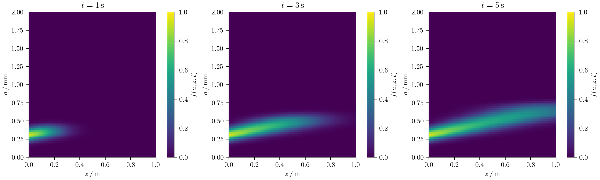

Axially dispersed reactors
Populations in a tubular reactor change both their position and their intrinsic properties. A crystal may grow while travelling downstream; axial mixing also spreads the time spent in the reactor. Treating position as another particle size would confuse these two processes and their boundary conditions.
AxialDispersion adds a physical axial mesh to a sectional population with one or two intrinsic coordinates. The velocity and dispersion coefficient are prescribed constants. This is an axial-dispersion reactor model; it does not solve fluid momentum or calculate a flow field.
Particle balance and units
For one intrinsic coordinate $a$ and axial position $z$, the balance is
\[\frac{\partial f(a,z,t)}{\partial t} +\frac{\partial[G(a,z,t)f(a,z,t)]}{\partial a} +u\frac{\partial f(a,z,t)}{\partial z} =D_z\frac{\partial^2 f(a,z,t)}{\partial z^2} +B(a,z,t)-S(a,z,t).\]
For two intrinsic coordinates, replace the growth contribution by
\[\frac{\partial[G_1(a_1,a_2,z,t)f(a_1,a_2,z,t)]}{\partial a_1} +\frac{\partial[G_2(a_1,a_2,z,t)f(a_1,a_2,z,t)]}{\partial a_2}.\]
$u\ge0$ has units axial length/time; $D_z\ge0$ has units axial length²/time. $f$ is a number density per fluid volume and intrinsic-coordinate measure. The state $N_{i,c}$ integrates over intrinsic bin $i$ and averages over axial cell $c$. It is not multiplied by axial cell width. With constant reactor cross-sectional area $A$, the total particle inventory is $A\sum_c\Delta z_c\sum_iN_{i,c}$.
Choose inlet and outlet conditions
Write the downstream axial flux as
\[J_z(a,z,t)=u f(a,z,t)-D_z\frac{\partial f(a,z,t)}{\partial z}.\]
The default Danckwerts inlet prescribes total flux from the upstream feed:
\[u f(a,0,t)-D_z\frac{\partial f(a,0,t)}{\partial z}=u f_{\mathrm{in}}(a,t), \qquad \frac{\partial f(a,L_z,t)}{\partial z}=0.\]
The inlet concentration inside the reactor need not equal the upstream feed. This flux formulation is the Danckwerts inflow condition. At the outlet, particles leave by advection and the dispersive flux is zero. For zero velocity this boundary choice gives zero total flux at both ends. boundary=:closed explicitly requests that situation and requires zero velocity. boundary=:periodic is also available for transport verification; it has no feed.
Intrinsic size boundaries remain separate: SizeBC or SizeBC2D controls growth through particle-size faces. Neither sets the reactor inlet.
Build and solve a reactor
Here a continuous feed enters a previously empty tube. Sizes are in mm, axial positions in m, and time in seconds.
using PopulationBalanceModels
sizes = Grid1D(range(0.0,2.0;length=41);coordinate=:length)
zgrid = AxialGrid(range(0.0,1.0;length=31))
feed = exp.(-((sizes.centers.-0.3)./0.08).^2).*sizes.widths
reactor = AxialDispersion(zgrid;
velocity=0.2, dispersion=0.005,
inlet=(p,t)->feed,
)
model = PBMModel(growth=Growth(AffineGrowth(0.08,0.0)))
operator = compile(model,sizes;
domain=reactor, methods=TermMethods(growth=MUSCL()),
bc=SizeBC(OpenBoundary(),OpenBoundary()),
)
N0 = zeros(length(sizes),length(zgrid))
problem = PBMProblem(operator,N0,(0.0,5.0))
dt = suggest_dt(operator,N0,(;),0.0;cfl=0.4)
solution = simulate(problem;method=SSPRK33(),dt,saveat=[0.0,1.0,3.0,5.0])
final_at_outlet = axial_population(operator,solution.u[end],length(zgrid))
number_concentration(sizes,final_at_outlet)1-element Vector{Float64}:
0.07830424622365152inlet(p,t) returns intrinsic bin concentrations, not density values or number rates. Integrate a measured feed density over its size bins before returning it. The implementation multiplies by velocity exactly once. Callbacks can depend on parameters and time. There is no implicit conversion between number- and material-weighted feed distributions.
The full runnable example uses 80 size bins and 60 axial cells:

Particles travel downstream and grow toward larger sizes. Dispersion spreads the startup front. The axial advection discretization also introduces numerical diffusion, which must be assessed separately from the specified physical $D_z$ by refining the axial grid.
julia --project=. examples/axially_dispersed_growth.jl
python docs/benchmarks/plot_transport_comparisons.py axial --usetexTwo intrinsic coordinates and local physics
Use the same domain with a tensor grid:
using PopulationBalanceModels
sizes = Grid2D(0.0:0.1:1.0,0.0:0.2:2.0)
zgrid = AxialGrid(0.0:0.1:1.0)
reactor = AxialDispersion(zgrid;velocity=0.2,dispersion=0.01)
model = PBMModel(growth=Growth2D((0.03,0.02)))
operator = compile(model,sizes;domain=reactor,bc=SizeBC2D())
N0 = zeros(length(sizes),length(zgrid))
problem = PBMProblem(operator,N0,(0.0,1.0))
size(axial_population(operator,problem.u0,1))(10, 10)Each state column flattens the tensor bins in Julia's column-major order. axial_population restores the $(n_1,n_2)$ view without copying it. A tensor feed may return that matrix shape or a flattened vector.
Intrinsic mechanisms use their existing sectional interfaces: growth, local sources and removal, and, for 1D intrinsic grids, supported nucleation and fixed-pivot collisions. Their residual is evaluated independently in every axial cell. ctx.fields.z gives that cell's center. The compile keyword fields=(cell,t)->(...) can add prescribed axial operating conditions. The context's N is the local intrinsic population; it is not the whole reactor.
Transport shared solute and multiple populations
axial_problem(local_problem,reactor;axial_scheme=MUSCL()) lifts an existing local PBMSystem into every reactor cell. All scalar bulk states receive the same axial advection and dispersion as the populations. Local interactions and material exchanges keep their original callbacks; ctx.bulk.c is the current cell's solute concentration and ctx.fields.z is its axial centre.
reactor = AxialDispersion(zgrid;velocity=u,dispersion=D,
inlet=(p,t)->(populations=(crystals=zeros(nbins),),bulk=(c=p.cfeed,)))
problem = axial_problem(local_problem,reactor;axial_scheme=MUSCL())
crystal_numbers = population(problem,problem.u0,:crystals) # bins × axial cells
solute = bulk(problem,problem.u0,:c) # one value per cell
local_state = axial_stateview(problem,problem.u0,1)The inlet must provide every local population and bulk value, either as those named tuples or as the complete packed vector. Initial values repeat the local problem unless an explicit initial matrix is given. Named population and bulk accessors return views; every column is a complete local coupled state. See Continuous precipitation for a working material-conserving model.
The coupled adapter supports one-/two-coordinate sectional populations and raw moments with residual-based local methods. It rejects DQMOM states: linearly advecting weights and weighted abscissas does not implement the spatial direct moment equations. axial_stateview(problem,u,cell).populations.name restores each tensor's intrinsic matrix; the axial solver still stores flattened local states in columns. Both axial adapters reject intrinsic SizeDiffusion, including tensor diffusion; axial dispersion is a separate physical mechanism. Direct evolution methods, negative flow, state-dependent dispersion and a solved flow field are outside both adapters. Limited reconstruction of individual raw moments can still lose joint realizability; check moment stage validity and refine rather than repairing moments silently.
Conservative discretization and time step
For adjacent axial cells, the face flux is
\[J_{i,c+1/2}=uN_{i,c} -D_z\frac{N_{i,c+1}-N_{i,c}}{z_{c+1}-z_c},\qquad \frac{dN_{i,c}}{dt}=R_{i,c} +\frac{J_{i,c-1/2}-J_{i,c+1/2}}{\Delta z_c}.\]
The single-population adapter uses first-order upwind advection. The coupled adapter selects its reconstruction with axial_scheme: Upwind, MUSCL, VanLeer, WENO3 and WENO5 support fixed nonuniform axial meshes; Centered and LinearUpwind require uniform spacing. WENO5 prepares the same cell-average reconstruction as intrinsic growth, with at least six axial cells. Dispersion uses a two-point centered flux, including nonuniform axial meshes. On a uniform mesh the dispersive term is second order. Interior fluxes cancel after multiplication by $\Delta z_c$. Higher-order advection does not increase the order of this dispersive flux or the Danckwerts/zero-gradient boundary closure. Independent WENO reconstruction of raw moments still has no joint-realizability guarantee; the native MeasureEuler axial guarantee continues to require Upwind. Consequently, the reactor inventory changes by local creation/removal and inlet minus outlet flux, even on a nonuniform axial mesh. axial_fluxes returns those face fluxes for balance diagnostics.
Explicit time stepping must resolve both intrinsic mechanisms and axial transport. On a uniform axial mesh, the axial contribution to the forward-Euler outgoing rate is $u/\Delta z+2D_z/\Delta z^2$ in interior cells. For the single-population adapter, suggest_dt combines it with local intrinsic transport/source bounds; it is still only a heuristic for limited or unlimited high-order intrinsic schemes. All residual-based native time methods and the optional SciML residual adapter can advance this system. Stiff diffusion on fine axial meshes may make an external implicit solver more practical.
Tests check inlet/outlet inventory balance on nonuniform meshes, constant-feed stationarity, positivity under a compatible explicit step, periodic Fourier advection–diffusion, second-order pure-dispersion refinement, and conservative intrinsic growth with both one and two particle coordinates.
Preserve joint realizability of transported moments
For supported raw-moment systems, select axial_scheme=Upwind() with simulate(...;method=MeasureEuler()). The native policy checks a nonuniform-mesh advection/dispersion CFL bound and transports each entire moment vector with the same nonnegative coefficients. Independent high-order moment reconstructions are outside that guarantee and are rejected by this policy. diagnostics(solution).reactor_flux_integrals records the actual accepted inlet/outlet flux integrals. Cumulative internal-size histories have zero axial flux; they are not transported reservoirs. Extinction/size escape combined with axial MeasureEuler is explicitly unsupported. Read the complete restrictions and run examples/realizable_axial_transport.jl for a nonuniform-grid inventory check.